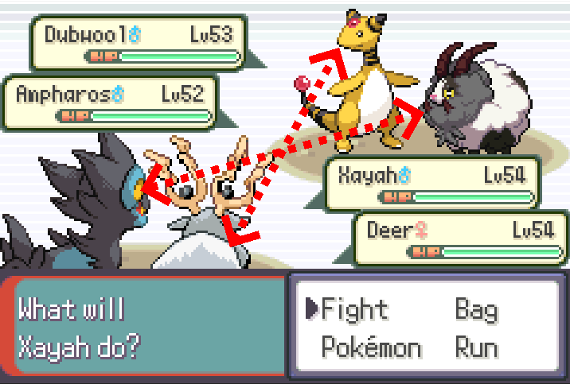

Run and Bun AI Reference
Croven’s Run and Bun (1.07) AI document — every move score, condition, and switch rule, reorganized for lookup mid-fight.
Source & caveat. The content here is Croven’s, with thanks to Emi, Terra, Tennis, Xavion, 3 Plates, qsns and Dekzeh. Croven notes it is “not a completely exhaustive document” — not every move and score is listed, and mistakes are possible. Unlike the Null reference, none of this has been verified against the game’s source; it is presented as written. Report corrections to croven on Discord.
Overview
Brief summary about Run and Bun (and honestly just general Pokemon) AI
The AI will calculate a score for every move and choose the highest scoring move to click on any given turn. If multiple moves have the same score, it randomly selects between one of them. In Double battles, the AI will calculate a score for each of its moves on each possible target, and choose the highest scoring move + target. In Run and Bun, the AI knows your full team’s stats, moves, and Abilities at the start of the battle. The rest of this document will list out the possible scores for the relevant moves in the game, and the scenarios in which those scores are possible. As a general rule, the default score for non-attacking moves is +6 (tied with the highest damage attacking move). A quick note about how I decided to lay this out: there are some damaging moves that have special AI (e.g. Relic Song). These moves will still follow the scoring laid out in the following "All damaging moves" section, but they get an additional additive boost as per their special AI. As an example, Relic Song (+10 normally) sums up to +13 when Meloetta sees a slow kill with it. Keep this in mind when using this document. Lastly, the AI has a basic function to check if a move is useless. For example, if Stealth Rocks are already set, the AI will not try to click SR again. If you are paralyzed, it will not try to paralyze you again. So on and so forth. I will not be listing all possible "bad move" cases here, as they are almost all intuitive and it would unnecessarily bloat this document. If I decide it is not intuitive, I will mention it.
Common scores to be aware of
- Highest damaging move: +6 (80%), +8 (20%)
- Slow kill (AI kills but is slower than target): +9 (80%), +11 (20%)
- Fast kill (AI kills and is faster* than target): +12 (80%), +14 (20%)
*AI sees speed ties as them being faster than the player
Switch AI
Switch AI
The AI in this game does not like to hard switch in battle, but it is possible. There are a few Conditions in Single Battles only. In Double Battles, the AI never switches unless in niche
- situations like Perish Song.
- First, the AI must only be able to use ineffective moves (score <= -5). This usually happens
- due to Encore, PP stalling, or a Choice item.
Second, there must be a mon in the AI's party that is either faster than the player mon and not
- OHKO'd, or slower than the players mon and not 2HKO'd.
(However due to a bug in the code, the 2nd condition isn’t properly coded. In reality, if the AI
- sees 1 mon in the back that is faster, it will think every mon after is also faster.)
- Third, the AI mon must not be below 50% health already.
If these are all true, then the AI has a 50% chance to switch. The mon it chooses to switch into is based on the post-KO switch AI, with the exception that it will not switch into a mon
- that fails the 2nd check just mentioned.
- (This does not apply to Perish Song as it follows its own routine unknown to us)
Damaging Moves
All damaging moves
- AI will roll a random damage roll for all of its attacking moves*, and the highest
- damaging move gets the following score:
- +6 (~80%), +8 (~20%)
- If multiple moves kill, then they are all considered the highest damaging move and
- all get this score.
- If a damaging move kills:
- If AI mon is faster, or the move has priority and AI is slower:
- Additional +6
- If AI mon is slower:
- Additional +3
- If AI has Moxie, Beast Boost, Chilling Neigh, or Grim Neigh:
- Additional +1
- If a damaging move has a high crit chance and is Super Effective on the target:
- Additional +1 (50%), no score boost other 50%
*Note: There are a few specific damaging moves that do not have their damage rolled normally
- and are thus never considered the "highest damaging move".
- These moves are Explosion, Final Gambit, Relic Song, Rollout, Meteor Beam,
- damaging trapping moves (e.g. Whirlpool), and Future Sight.
- All of these moves, with the exceptions of Explosion, Final Gambit, and Rollout,
- still have a check to see if they kill the target mon. If so, the above boosts
- for kills still apply. They will just never get the +6 or +8 boost from being the
"highest damaging move". They all also have separate AI that is listed later in this file,
- which stacks additively with any score boosts from kills.
Damaging priority moves
- If AI is dead to player mon and slower, all attacking moves with priority
- get an additional +11
Damaging Trapping moves (Whirlpool, Fire Spin, Sand Tomb, Magma Storm, Infestation, etc.)
- +6 (~80%), +8 (~20%)
Damaging speed reduction moves (Icy Wind, Electroweb, Rock Tomb, Mud Shot, Low Sweep)
- If this is the highest damaging move, none of the below bonuses are applied, and the move
- gets the usual +6 (80%)/+8 (20%) for being the highest damaging move
- If target is not Contrary, Clear Body, or White Smoke and AI is slower:
- +6
- Else:
- +5
- If it is a Double battle and the move is Icy Wind or Electroweb:
- Additional +1
Damaging Atk/SpAtk reduction moves w/ guaranteed effect (Trop Kick, Skitter Smack, etc.)
- If this is the highest damaging move, none of the below bonuses are applied, and the move
- gets the usual +6 (80%)/+8 (20%) for being the highest damaging move
If target is not Contrary, Clear Body, or White Smoke, and has a move of the corresponding
- split (e.g. special move if AI is considering Skitter Smack):
- +6
- Else:
- +5
- If it is a Double battle and the move is spread:
- Additional +1
Damaging -2 SpDef reduction moves w/ guaranteed effect (Acid Spray)
- Regardless of whether this is the highest damaging move, these moves receive an additional ss+6 on top of any standard scoring for highest damage/kill etc.
Specific Moves
Preamble
Pokemon Run and Bun (1.07) AI document Created by Croven Thank you to Emi, Terra, Tennis, Xavion, 3 Plates, qsns, and of course Dekzeh for helping This document is intended to help you understand what the AI will do on a given turn. This is not a completely exhaustive document, I did not list out every possible move and their possible score. I did my best to capture the scores for every relevant move, but it is possible I missed something. If I missed something important, or you find a mistake here, please DM me on Discord (croven) and I will do my best to address it. I hope this document helps you in your playthrough of Run and Bun! :)
Future Sight
- If AI is faster than target and is KO’d by target:
- +8
- Else:
- +6
- Note: This stacks with bonuses for kills listed in the “All damaging moves” section.
Relic Song
- If in Meloetta base form:
- +10
- If in Meloetta Pirouette form:
- Never Relic Songs (score is -20)
- Note: This stacks with bonuses for kills listed in the “All damaging moves” section.
Sucker Punch
- If AI used Sucker Punch last turn:
- -20 (50%), no score change other 50%
- Note: Whether the Sucker failed or not last turn does not affect its score in any way
Pursuit
- If Pursuit can KO player mon:
- +10
- If Pursuit cannot KO player mon:
- If player mon is below 20% HP:
- +10
- If player mon is below 40% HP:
- +8 (50%), no score boost other 50%
- Regardless of above conditions, if AI is faster:
- Additional +3
Note: The bonuses for kill and AI outspeeding stack with the bonus for kill listed in the “All
- damaging moves” section.
Fell Stinger
- If AI isn’t at max Atk stage and Fell Stinger KOs:
- If AI is faster:
- Total score of +21 (80%), +23 (20%)
- If AI is slower:
- Total score of +15 (80%), +17 (20%)
- Otherwise:
- Treated as a normal damaging move
Rollout
- Always +7
Stealth Rock
- If first turn out:
- +8 (25%), +9 (75%)
- Else:
- +6 (25%), +7 (75%)
Spikes, Toxic Spikes
- If first turn out:
- +8 (25%), +9 (75%)
- Else:
- +6 (25%), +7 (75%)
Note: If at least 1 of the corresponding spikes is up already, score is lowered by 1 always
Sticky Web
- If first turn out:
- +9 (25%), +12 (75%)
- Else:
- +6 (25%), +9 (75%)
Protect, King's Shield
- Base: +6
If AI is inflicted with any of the following: Poison, Burn, Cursed, Infatuated, Perish Songed,
- Leech Seeded, Yawned:
- Additional -2
- If player mon is inflicted with any of the above:
- Additional +1
- If it's AI mon's first turn out and it is not a double battle:
- Additional -1
- AI will not protect if they die to secondary damage afterwards (weather, status, etc.)
- If AI used protect last turn, 50% chance to never use protect this turn (-20).
- If AI used protect last 2 turns, never uses protect this turn.
- Note for Clifford and Macey double:
- It appears that the Passimian gets an additional +8 to Detect since its partner has Huge
- Power and it has Receiver, amounting to a score of +14.
- King's Shield has no unique AI, and is equivalent to Protect.
Fling
- If the Fling's effect raises the targets speed (e.g. Salac Berry)
- and AI partner has Weakness Policy, and Fling is super effective:
- +12
- If the Fling's effect raises the targets speed, but no WP/Fling isn't SE:
- +9
Role Play
If the AI's partner has one of the following Abilities, and the AI mon has none of the following
- Abilities - Huge Power, Pure Power, Protean, Tough Claws:
- +9
- Else
- -20
Shadow Sneak, Aqua Jet, Ice Shard
- Special case for doubles here.
- If their partner has Weakness Policy and this move is super effective on
- the partner, these get a score of +12 total.
Magnitude, Earthquake
- Special case for doubles here.
If their partner isn't grounded OR their partner is using Magnet Rise and faster than EQ user
- Basically, if partner won't be hit by EQ this turn:
- Additional +2
- Else if partner will be hit by EQ and is Fire, Poison, Electric, Rock type:
- Additional -10
Note that this check doesn't happen if partner is immune to EQ, so Crobat for example never
- causes an EQ score reduction.
- Else if partner will be hit by EQ and is not one of the above types:
- Additional -3
Imprison
- If player mon has at least one move in common with AI mon:
- +9
- Else:
- Never used (-20)
Baton Pass If AI has a mon alive to BP into, and AI is either behind a Substitute or has a stat raised (or
- both):
- +14
- If AI mon is last mon out:
- Never used (-20)
- If AI has a mon alive to BP into, but has no Substitute or stat increases:
- +0
Tailwind
- If AI mon or its partner are slower than any player mon on the field:
- +9
- Else:
- +5
Trick Room
- If AI mon or its partner are slower than any player mon on the field:
- +10
- Else:
- +5
- If Trick Room is already up:
- -20
Fake Out
- If it’s the AI mon’s first turn out and not targeting Shield Dust / Inner Focus mon:
- +9
Helping Hand, Follow Me
- +6
AI will not use either of these moves if their partner is also using this move, or their partner is
- using a Status move
Final Gambit
- If AI mon is faster and has a strictly higher current HP number than player mon:
- +8
- If above is not true, and AI is faster and dies to player mon:
- +7
- Else:
- +6
Electric/Psychic/Grassy/Misty Terrain
- If AI holding Terrain Extender:
- +9
- Else:
- +8
Light Screen / Reflect
- Starts at +6
- If player mon has a move that corresponds with the screen (e.g. physical move for Reflect):
- If AI mon has Light Clay:
- Additional +1
- Another additional +1 is applied 50% of the time
- In summary: +6 base, can be +7 or +8 depending on player moves, Light Clay being held, and
- RNG
Substitute
- Starts at +6
- If player mon is asleep:
- Additional +2
- If player mon is Leech Seeded and AI mon is faster:
- Additional +2
- Regardless of above conditions:
- Additional -1 (50%), no score change other 50%
- If player mon has any sound-based move:
- Additional -8
- If AI is at 50% HP or lower, or the player mon has Infiltrator:
- Never used (-20)
Explosion, Self Destruct, Misty Explosion
- If AI mon is at less than 10% HP:
- +10
- Else if AI mon is at less than 33% HP:
- +8 (~70%), +0 (~30%)
- Else if AI mon is at less than 66% HP:
- +7 (50%), +0 (50%)
- Else:
- +7 (~5%), +0 (~95%)
- AI will not use a Boom move if the target is immune, or if the AI mon is the last mon
- and the player has more than one mon alive.
- If both AI and player are on their last mon, then the Boom move will get a -1 applied
- to its score
Memento
- If AI mon is at less than 10% HP:
- +16
- Else if AI mon is at less than 33% HP:
- +14 (~70%), +6 (~30%)
- Else if AI mon is at less than 66% HP:
- +13 (50%), +6 (50%)
- Else:
- +13 (~5%), +6 (~95%)
- AI will not use Memento if the AI is on its last mon.
- Thunder Wave, Stun Spore, Glare, Nuzzle, Zap Cannon:
- If one of the following conditions are true:
- Player mon is faster than AI mon, but slower than AI mon after paralysis (1/4 speed)
- AI mon has Hex or a move that flinches
- Player mon is infatuated or confused
- +8
- Else, none of the above conditions are met:
- +7
- Regardless of above conditions:
- Additional -1 (50%), no score change other 50%
Will-o-Wisp
- Starts at +6
- ~37% of the time, the following conditions are checked:
- If target has a physical attacking move:
- Additional +1
- If AI mon or its partner has Hex:
- Additional +1
- The other ~63% of the time:
- No other bonuses, so just +6
Trick, Switcheroo
- If AI is holding one of the following: Toxic Orb, Flame Orb, Black Sludge:
- +6 (50%), +7 (50%)
- If AI is holding one of the following: Iron Ball, Lagging Tail, Sticky Barb:
- +7
- Else:
- +5
Yawn, Dark Void, and all other non-damaging sleep moves (i.e. Grasswhistle, Sing)
- Starts at + 6
- 25% of the time, AI considers the following conditions (assuming it sees no kill):
If player mon can be put to sleep (no sleep-preventing abilities, no pre-existing status, no
- terrain, etc.):
- Additional +1
- If above is true, and AI has Dream Eater or Nightmare, and player does not have Snore or
- Sleep Talk:
- Additional +1
- If AI or AI's partner has Hex:
- Additional +1
- The other 75% of the time:
- No additional bonuses, so just +6
- Poisoning Moves:
- Starts at +6
- ~38% of the time, if the AI cannot KO the player mon, the following checks are applied:
- If player mon can be poisoned and is above 20% HP:
- If AI mon has Hex, Venom Drench, Venoshock or the ability Merciless
- and the player has no damaging moves:
- Additional +2
Due to a bug in the code, some checks that should be happening don’t actually happen. They now have been left out in the AI Doc.
- The other ~62% of the time:
- No additional bonus, so just the base +6
General setup (Dragon Dance, Calm Mind, etc.*)
- If player mon can KO AI (and AI doesn't have Sturdy/Sash active), the AI mon will never
- setup (-20)
- If player mon has Unaware, the AI mon will never set up (-20), unless the move is Power-up
- Punch, Swords Dance, or Howl (Unaware doesn’t affect the score of these 3 moves
- specifically)
Note: Attack stat increasing moves with 100% effect also fall into this category (Power-up
- Punch, Charge Beam). Notably, this means that Brawly's Scraggy won't
- Power-up Punch if you have any killing rolls on it, even if PuP is a kill.
- *Full list of moves that fall into this category:
- Power-up Punch, Swords Dance, Howl, Stuff Cheeks, Barrier, Acid Armor, Iron Defense,
- Cotton Guard, Charge Beam, Tail Glow, Nasty Plot, Cosmic
- Power, Bulk Up, Calm Mind, Dragon Dance, Coil, Hone Claws, Quiver Dance, Shift Gear,
- Shell Smash, Growth, Work Up, Curse, Coil, No Retreat
Offensive Setup (Dragon Dance, Shift Gear, Swords Dance, Howl, Sharpen, Meditate, Hone Claws)
- Starts at +6
- If player mon is incapacitated (frozen with no thawing move, asleep, recharging, loafing
- around due to Truant):
- Additional +3
- If AI is slower and is 2HKO’d by player mon:
- Additional -5
Due to a bug in the code, some checks that should be happening don’t actually happen. They now have been left out in the AI Doc.
Defensive Setup (Acid Armor, Barrier, Cotton Guard, Harden, Iron Defense, Stockpile, Cosmic Power)
- Starts at +6
- If AI is slower and is 2HKO’d by player mon:
- Additional -5
- ~95% of the time, all the following checks are applied:
- If player mon is incapacitated:
- Additional +2
- If the move boosts Defense and Special Defense:
- If AI mon is less than +2 Def or less than +2 SpDef:
- Additional +2
Due to a bug in the code, some checks that should be happening don’t actually happen. They now have been left out in the AI Doc.
Coil, Bulk Up, Calm Mind, Quiver Dance
Note: Despite No Retreat also boosting Special Defense, AI treats it identically to Bulk Up
- Starts at +6
These four moves are treated as “Defensive Setup” or “Offensive Setup” depending on the moves of the player’s mon on the field. If the move boosts physical stats (Coil, Bulk Up, No Retreat), then the AI checks if the player mon has a physical attacking move and no special attacking moves. If this is true, then these three moves are treated as “Defensive Setup”. If the player has no physical attacks or at least one special attack, then these moves are treated as “Offensive Setup”. Calm Mind and Quiver Dance are treated the same, except with special and physical swapped. So if the player mon has a special attacking move and no physical attacking moves, CM/QD are treated as “Defensive Setup”. Otherwise, they are considered “Offensive Setup”. See the sections above for how the AI scores “Defensive” and “Offensive” setup.
Agility, Rock Polish, Autotomize
- If AI is slower than player mon:
- +7
- Else:
- Never used (-20)
Tail Glow, Nasty Plot, Work Up
- Starts at +6
- If player mon is incapacitated (frozen with no thawing move, asleep, recharging, loafing
- around due to Truant):
- Additional +3
- If above is not true, and player mon cannot 3HKO AI mon:
- Additional +1
- If AI is also faster than player:
- Additional +1
- If AI is slower and is 2HKO’d by player mon:
- Additional -5
- If AI is at +2 SpAtk or higher:
- Additional -1
Shell Smash
- Starts at +6
- If player mon is incapacitated (frozen, asleep, recharging):
- Additional +3
- If player mon cannot KO AI mon if Shell Smash is used this turn:
- Additional +2
- If player mon can KO AI mon if Shell Smash is used this turn:
- Additional -2
- Note: AI factors in Smash drop (and White Herb) if it is faster
- If AI mon's attack stat is +1 or higher, or either attacking stat is at +6:
- Never used (-20)
Belly Drum
- If player mon is incapacitated (frozen, asleep, recharging):
- +9
- If above is not true and player mon cannot KO AI mon after a Belly Drum*:
- +8
- If neither of the above conditions is true:
- +4
- *Note: AI sees if it is holding a Sitrus berry and takes that into account
Focus Energy, Laser Focus
- If AI has Super Luck/Sniper, or is holding Scope Lens, or has a move with high crit chance:
- +7
- Else:
- +6
- AI will not use these moves if the player mon has Shell Armor or Battle Armor.
Coaching
- Starts at +6
- If in a double battle and partner doesn’t have Contrary:
- If partner’s Attack stage is less than +2:
- Increase score by 1 - current Attack stage (e.g. if Attack is unboosted, score gets
- increased by 1. If Atk is at -1, score gets increased by 2)
- If partner’s Defense stage is less than +2:
- Increase score by 1 - current Defense stage (e.g. if Defense is unboosted, score gets
- increased by 1. If Def is at -1, score gets increased by 2)
- Regardless of partner Atk/Def stage:
- Additional +1 is applied ~80% of the time
- If not in a Double battle, or the partner has Contrary:
- Never used (-20)
For example: if an AI mon has Coaching and its partner has no stat changes (Atk and Def are
- both +0), then Coaching has a +8 score ~20% of the time, and +9 ~80% of the time.
Note for Pokemon with Contrary
Attacking moves that lower stats (Overheat, Leaf Storm, and Superpower) are treated as setup moves when used by Pokemon with Contrary. This only applies if the move is not the highest damaging move and the move does not kill. In this case, the moves get the same score as their setup counterparts (for example, Overheat and Leaf Storm are equivalent to Nasty Plot). If the attacking move is the highest damaging move already, its score is not affected by Contrary and the move is simply treated as a normal damaging move. These “setup” moves are a little unique and do not have the checks that normal setup moves have. Contrary Overheat, Leaf Storm, and Superpower can be used against Unaware mons, and can also be used even if the AI mon is threatened with an OHKO or faster 2HKO, despite Nasty Plot and Bulk Up receiving heavy penalties in those cases.
Meteor Beam
- If AI is holding a Power Herb:
- +9
- Else:
- Never used (-20)
Destiny Bond
- If AI is faster and dies to player mon:
- +7 (~81%), +6 (~19%)
- If AI is slower:
- +5 (50%), +6 (50%)
NOTE ABOUT RECOVERY MOVES
- I have taken the liberty of hiding the "AI deciding if it should recover" logic
- in this section since it's a little bit long and is often irrelevant (for example
- if you are baiting a kill, it doesn't matter what this logic returns). For those
- who are curious, or if it is actually relevant, see the EXTRA DETAILS section at
- the bottom of this document for the full logic.
Recovery Moves (Recover, Slack Off, Heal Order, Soft-Boiled, Roost, Strength Sap)
- If AI decides it should recover:
- +7
- Else:
- +5
- AI will not use Recovery moves if at full (-20), or at 85% or higher (-6)
Sun-based recovery moves (Morning Sun, Synthesis, Moonlight)
- If Sun is active and AI decides it should recover:
- +7
- If either Sun isn't active, or AI decides it shouldn't recover, it
- recalculates if it should recover using 50% healing and this move
- becomes identical to the Recovery Moves listed above.
- +7 if recalculation returns True, +5 if False
- AI will not use Recovery moves if at full (-20), or at 85% or higher (-6)
Rest
- If AI decides it should recover:
- Then, If one of the following conditions is true:
- AI is holding an item that would cure Sleep (Lum Berry, Chesto Berry, etc.)
AI has Sleep Talk or Snore AI has Shed Skin/Early Bird AI has Hydration and it is raining.
- +8
- If none of the above conditions are true:
- +7
- If AI decides it should not recover:
- +5
Taunt
- If target has Trick Room and TR is not currently active:
- +9
- Else, if target has Defog, Aurora Veil is active, and AI is faster:
- +9
- If neither of the above are true:
- +5
Encore
- If AI is faster and Encore is encouraged*:
- +7
- If AI is slower:
- +6 (50%), +5 (50%)
- AI will not Encore if target is already Encored or if it is the target's first turn out
- (there is no move for the AI to Encore)
*The AI looks at the target's last used move and checks if it is one that should be Encored. The list of moves that should be Encored is very long and I will not be listing them all here,
- but it mostly boils down to non-damaging moves.
Counter / Mirror Coat
- Starts at +6
- If player mon can KO AI (and AI doesn't have Sturdy/Sash active)
- Additional -20
- If target can KO AI mon, and AI mon has Sturdy/Focus Sash and is at 100% HP, and target
- only has moves of the corresponding split (e.g. only physical moves for Counter scoring):
- Additional +2
- If target cannot KO AI mon, and target only has moves of the corresponding split:
- Additional +2 (~80%), no score boost other ~20%
- Regardless of above, if AI is faster:
- Additional -1 (25%), no score change other 75%
- Regardless of above, if player has status moves:
- Additional -1 (25%), no score change other 75%
Extra Details
Extra Details
- Should AI Recover function:
- Recovery %:
- Standard recovery moves (Recover, Slack Off, Heal Order, Roost, Strength Sap): 50%
- Weather-based recovery moves (Morning Sun, Synthesis, Moonlight): 67%
- Rest: 100%
- If AI mon is Toxic'd:
- Returns False
- If player mon does as much or more damage than would be healed off:
- Returns False
- Note that this calculation uses the Recovery % listed above.
- If AI is faster:
- If player mon can kill AI mon, but cannot after AI mon uses recovery move:
- Returns True
- If player mon cannot kill AI mon:
- If AI mon is below 66% and above 40%:
- Returns True (50%), Returns False (50%)
- If AI mon is below 40%:
- Returns True
- If AI is slower:
- If AI is below 70% HP:
- Returns True (75%), Returns False (25%)
- If AI is below 50% HP:
- Returns True
- If none of the above cases are true, then this function defaults to return False.
Post-KO Switch Scores
When the AI sends a Pokémon in after one faints, it scores each party member against the player’s active Pokémon and sends the highest.
- +5 AI’s mon is faster and OHKOs it.
- +4 AI’s mon is slower but OHKOs it and is not OHKO’d.
- +3 AI’s mon is faster and deals more damage than it takes (by %, not raw).
- +2 AI’s mon is slower and deals more damage than it takes.
- +1 AI’s mon is faster.
- 0 — default.
- -1 AI’s mon is slower and is OHKO’d.
Special cases: +2 for Ditto; +2 for Wynaut and Wobbuffet, as long as they are not both slower and OHKO’d.
Double Battles
In doubles the AI behaves the same way but considers only one slot: its first slot looks at the player’s first slot when deciding what to send in, and its second slot looks at the player’s second.
